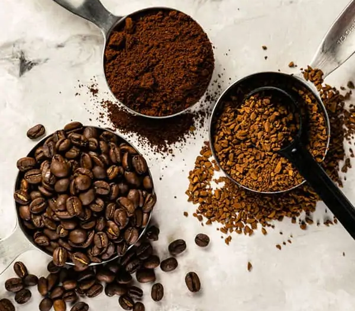

La leyenda del pastor. Según una leyenda, fue un joven pastor yemení llamado Kaldi quien descubrió la planta del café. Kaldi observó un comportamiento extraño en su rebaño, que brincada y saltaba enérgicamente, tras ingerir los frutos rojos de un arbusto hasta entonces desconocido. Sorprendido por este hecho el pastor arrancó varios frutos y se los mostró a un superior religioso de un convento cercano. El religioso probó a hervir las bayas y beber la infusión resultante, pero era demasiado amarga y la desechó. Al tirar aquellos frutos al fuego observó cómo al tostarse desprendían un agradable aroma. De nuevo probó a preparar una infusión con las bayas ya tostadas.
Los historiadores sitúan las primeras plantas de café en las regiones montañosas de Etiopía, antes del siglo IX. Desde allí pasaron al vecino Yemen, desde donde fueron llevadas hasta Ceilán y la India. El café fue introducido en Europa cuando varios ejemplares de cafetos procedentes de Java fueron llevados al Jardín Botánico de Amsterdam. Desde entonces el cultivo del café se extendió por el continente, incluso a las colonias que los países europeos tenían en América.
De fruto a infusión. En un primer momento el café se consumía masticando los granos crudos o en una masa obtenida tras machacar los frutos y mezclarlos con grasa. Más tarde el café se convirtió en una bebida obtenida de la maceración de los granos en agua fría. A partir del siglo XIII se procedió a secar los granos al sol y tostarlos al fuego antes de preparar la infusión, tal y como se sigue realizando en la actualidad.